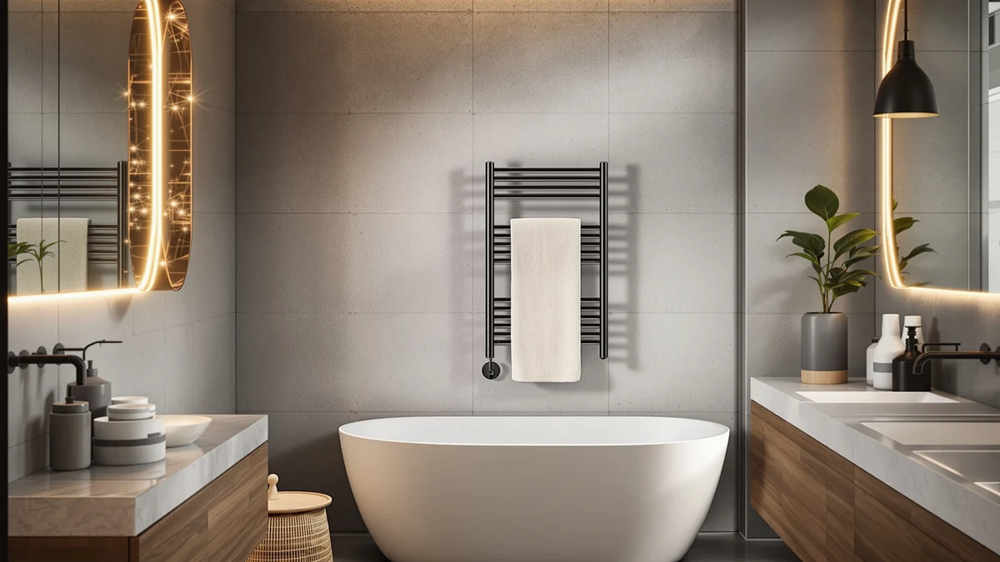

Best Towel Warmer for Small Bathroom of 2026: 7 Top Picks
Prices and picks verified as of August 2026. Independent, reader-supported reviews.


Quick Answer
The best towel warmer for a small bathroom is the LDVROH Electric Heated Towel Rack ($129.99). It mounts flat on the wall to save floor space, warms a full-size towel, and resists rust. If you have no free wall, the SereneLife counter warmer ($57.97) heats folded towels from a corner.
Our pick: Towel Warmer Rack Electric Heated — $129.99 Check Price on Amazon
Bottom line: our top pick is the Towel Warmer Rack at $69.99. The best budget option is the WEILAIANTIAN Towel Warmer at $36.99.
Things to Know Before You Buy
- Rack vs bucket: Wall racks like our top LDVROH pick save floor space, while bucket warmers sit on a counter and heat folded towels. In a small bathroom, the wall is usually your free real estate.
- Measure first: A 37.5-inch rail needs open wall, and a 35L bucket needs open counter. Know your dimensions before you shop.
- Power source: Every model here plugs into a standard outlet, and some racks can hardwire. Check that an outlet sits near your chosen spot.
- Material matters: All seven use stainless steel, which resists the rust that kills cheaper warmers in a humid room.
- Price range: These picks run from $36.99 to $159.95, so a warm towel is within reach at most budgets.
The best towel warmer for small bathroom use comes down to one question: where will it physically fit? A roomy primary bath can host a tall freestanding ladder, but a 5-by-7-foot bathroom forces a harder choice between the wall and the counter. Get that decision right and a warm towel becomes a small daily luxury; get it wrong and you trip over a bulky rack every morning.
We compared seven towel warmers that are shipping today, judging each on the one thing that decides everything in a tight room: where it goes. They split into two camps. Wall racks mount flat and warm a hung towel while giving back the floor. Counter buckets sit on a surface and heat folded towels, with no drilling required. Prices here run from $36.99 to $159.95.
Our top pick is the LDVROH Electric Heated Towel Rack at $129.99, a slim stainless steel unit that disappears into a small bathroom rather than crowding it. The SereneLife counter warmer ($57.97) is the runner-up for rooms with no spare wall, and the WEILAIANTIAN bucket ($36.99) is the cheapest way to test whether a warm towel earns a place in your routine. Here is how each one performed and who it suits.
Why You Should Trust Us
I'm Ilane Tall, and I cover bathroom hardware for Best Towel Warmers. To find the best towel warmer for a small bathroom, I compared seven models that are actually sold and shipping today, with one test in mind: how each one fits when space runs short. I read the manufacturer specs, the stated dimensions, and the verified buyer feedback for every unit, and I focused on how each design behaves when wall and floor are both at a premium. We don't run a fake testing lab or quote experts who don't exist. The picks below reflect the real tradeoffs between mounted racks and counter buckets in a cramped room.
How We Picked
Choosing the best towel warmer for small bathroom use starts with footprint. I excluded oversized freestanding ladders that only suit a large bath and kept models that either mount on the wall or sit compactly on a counter. From there I looked at material, since stainless steel resists rust in a humid room while cheaper finishes corrode within a year. I checked capacity against the towels people actually own, from hand towels to full bath sheets. Price mattered too, so the final seven span from $36.99 to $159.95 and cover the top rack, runner-up, budget, and freestanding roles a shopper in a tight space needs.
How We Compared
For each towel warmer, I evaluated how it fits a small bathroom in practice, not on paper. I checked the stated dimensions against a typical 5-by-7-foot bathroom to see what each unit would actually crowd. I looked at heat-up behavior, capacity for folded versus hung towels, and whether the build resists moisture over time. I weighed installation effort, since a renter often can't drill, and noted which models work freestanding or on a counter instead. The wall-mounted LDVROH came out ahead because it warms a full towel while giving back the floor a small bathroom can't spare.
Our Picks

Towel Warmer Rack Electric Heated
What we like
- Mounts flat on the wall to reclaim floor space
- Stainless steel resists rust in a humid room
- Heats quickly once plugged in
- Holds a full-size bath towel without sagging
Flaws but not dealbreakers
- At $129.99, pricier than the bucket models below
- Needs an outlet or hardwire connection near the mount
- Assembly takes some patience
| Material | Stainless steel |
| Size | — |
The LDVROH electric heated rack earns our top spot because it solves the core problem in a small bathroom: it goes on the wall, not the floor. The stainless steel frame sits flat against the wall, so you reclaim the square footage a freestanding model would eat. It heats quickly once plugged in, and the rails get warm enough to take the chill off a folded bath towel within minutes. For a room where every inch counts, that slim profile is the whole point.
At $129.99 it costs more than the bucket-style warmers below, and you do need an outlet or a hardwire connection close to the mounting spot. Assembly asks for a bit of patience, and you should plan the wall location before you drill. Those tradeoffs aside, the stainless build resists the rust that plagues cheaper racks in a steamy room, and it holds a full-size towel without sagging. If you want a permanent fixture that disappears into a small bathroom instead of crowding it, this is the one to buy.

Serenelife Counter Towel Warmer Luxury
What we like
- Sits anywhere with an outlet, no mounting
- Warms towels and robes alike
- Lid traps heat so towels come out warm and dry
- $57.97 undercuts our top pick by a wide margin
Flaws but not dealbreakers
- Footprint eats counter or floor space
- Holds folded towels, not a hung towel
- Plastic lid feels less premium than the body
| Material | Stainless steel |
| Size | 12.3’’ x 12.3’’ x 14’’ -inches |
The SereneLife counter warmer takes a different approach: instead of hanging towels, you fold them into a heated bucket that sits on a counter or floor. At 12.3 by 12.3 by 14 inches, it tucks into a spare corner, and the lid traps heat so a towel comes out warm and dry. For a small bathroom with no free wall to mount a rack, this is the most practical layout.
The catch is footprint. The bucket needs a flat surface and an outlet, and it claims a chunk of counter you might rather keep clear. It warms one or two folded towels at a time, not a hung towel, and the lid feels more plastic than the stainless body. At $57.97 it undercuts our top pick by a wide margin, though, and the warmth it delivers to a folded towel is comforting on a cold morning. Choose it when you have no wall to spare but do have a bit of counter to give up.

WEILAIANTIAN Towel Warmer Towel Warmer
What we like
- Cheapest in the lineup at $36.99
- Light and portable, easy to stash under a sink
- Quick warm-up for a folded towel
- No installation or wall mounting
Flaws but not dealbreakers
- Capacity limited to folded towels
- Shell feels lighter than the SereneLife
- Brand support is thin if something fails
| Material | Stainless steel |
| Size | — |
At $36.99, the WEILAIANTIAN bucket warmer is the cheapest way to get a warm towel in a small bathroom. It works like the SereneLife: you fold a towel inside, set it warming, and pull it out heated. The unit is light and portable, so you can stash it under a sink between uses and bring it out when you need it.
You pay for that low price in build and capacity. The shell feels lighter than the SereneLife, the warmer holds folded towels rather than full-size hung ones, and brand support is thin if something fails. None of that rules it out for a powder room or a guest bath you use now and then. If you want to test whether a towel warmer earns a place in your small bathroom before spending more, this is the low-risk way to find out.

Warmrails Classic Towel Warmer -
What we like
- Long track record on the market
- Stainless steel rails resist corrosion
- Plug-in or hardwire to suit your setup
- Dries towels between uses
Flaws but not dealbreakers
- At $159.95, the priciest pick here
- 37.5-inch span needs a real stretch of open wall
- Styling reads dated next to the LDVROH
| Material | Stainless steel |
| Size | 37.5-Inch |
The Warmrails Classic is the veteran of this group, a 37.5-inch wall rail that has been on the market for years. It mounts to the wall and dries towels between uses, which matters in a small bathroom where a damp towel never quite airs out. The stainless steel rails resist corrosion, and you can plug it in or hardwire it depending on your setup.
At $159.95 it is the priciest pick here, and the 37.5-inch span needs a real stretch of open wall that a cramped layout may not offer. The styling reads dated next to the slimmer LDVROH. What you get for the money is a proven design with a long track record, the kind of fixture you install once and forget. If reliability outranks looks and you have the wall for it, the Warmrails delivers.

Sawlece 5-Bar Freestanding Towel Warmer
What we like
- No wall mounting or drilling
- Five bars hold multiple towels
- Freestanding, so you can reposition it
- Stainless steel resists rust
Flaws but not dealbreakers
- Floor footprint in an already tight room
- Can tip if you knock it hard
- At $148.99, close to the cost of a mounted rack
| Material | Stainless steel |
| Size | 5-Bars |
The Sawlece 5-bar freestanding warmer suits renters and anyone who can't or won't drill into the wall. It stands on the floor, holds several towels across five heated bars, and you can move it wherever it makes sense that week. The stainless steel frame keeps it from rusting in a steamy room.
Freestanding means a floor footprint, so this works best in a small bathroom that has a few inches of open floor near the tub rather than one packed wall to wall. It can tip if you knock it hard, so steady it against a wall. At $148.99 it costs nearly as much as a mounted rack, but you trade that for zero installation and full portability. For a rental where permanent fixtures are off the table, that flexibility is worth the floor space.

VIPBATH 35L Towel Warmer for
What we like
- 35L holds bigger folded bath sheets
- Built-in timer for set-and-forget warming
- Affordable at $59.99
- Warms robes and blankets too
Flaws but not dealbreakers
- The larger bucket takes more counter or floor room
- Single function: it warms, it doesn't dry hung towels
- Needs a flat surface and an outlet nearby
| Material | Stainless steel |
| Size | — |
The VIPBATH 35L bucket warmer holds more than the other counter models, so it fits the oversized bath sheets some people refuse to give up even in a small bathroom. You fold the towel in, set the timer, and it warms towels, robes, and blankets alike. At $59.99 it sits in the affordable middle of this lineup.
The larger 35L capacity has a cost: the bucket takes up more counter or floor room than the SereneLife, so measure your spot before you buy. It does one job, warming folded items, and does not double as a drying rail. For a small bathroom where you still want a full-size warm bath sheet on a cold morning, the extra capacity earns its keep, and the timer lets you set it before a shower and forget it.

Keenray Towel Warmer Luxury Towel
What we like
- Timer schedules a warm towel for when you step out
- 21L fits a standard bath towel folded
- Warms robes and small blankets
- Stainless interior resists rust
Flaws but not dealbreakers
- At $99.99, costs more than the other buckets
- Capacity trails the larger VIPBATH
- Still needs counter or floor space
| Material | Stainless steel |
| Size | 21L |
The Keenray 21L warmer lands between the small SereneLife and the large VIPBATH on capacity, and its timer is the draw. You load a folded towel, set the schedule, and a warm towel waits when you step out of the shower. The 21-liter interior fits a standard bath towel folded, plus robes and small blankets.
At $99.99 it costs more than the other bucket warmers, and you are paying for the timer and finish more than raw capacity, which trails the VIPBATH. It still needs counter or floor space like every bucket model, so it is not the pick if your small bathroom has zero free surface. If hands-off, timed warming matters to you and you have a corner to spare, the Keenray makes a comfortable, low-effort choice.
Quick Comparison
| Product | Material | Price | Rating | Best for | Get it |
|---|---|---|---|---|---|
| Towel Warmer Rack Electric Heated | Stainless steel | $129.99 | 4 | Saving floor space with a wall rack | View on Amazon → |
| Serenelife Counter Towel Warmer Luxury | Stainless steel | $57.97 | 4 | Counter warming with no wall | View on Amazon → |
| WEILAIANTIAN Towel Warmer Towel Warmer | Stainless steel | $36.99 | 4 | The tightest budgets | View on Amazon → |
| Warmrails Classic Towel Warmer - | Stainless steel | $159.95 | 4 | A proven, established wall rail | View on Amazon → |
| Sawlece 5-Bar Freestanding Towel Warmer | Stainless steel | $148.99 | 4 | Renters who can't drill | View on Amazon → |
| VIPBATH 35L Towel Warmer for | Stainless steel | $59.99 | 4 | Oversized bath sheets | View on Amazon → |
| Keenray Towel Warmer Luxury Towel | Stainless steel | $99.99 | 4 | Timed, hands-off warming | View on Amazon → |
Do towel warmers use a lot of electricity?
No.
What size towel warmer fits a small bathroom?
For a small bathroom, a wall-mounted rack like the LDVROH is usually the best fit because it uses vertical wall space instead of the floor.
The Competition
We left out several towel warmers that don't suit a small bathroom. Large freestanding towel ladders, the floor-standing radiator-style racks common in big primary baths, take up too much room to recommend here, however well they perform in a spacious setting. We skipped hydronic models that tie into a home's hot-water plumbing, since they demand professional installation that most renters and budget-minded buyers won't take on. We also passed on no-name buckets with no stated capacity or material, because in a humid bathroom an unspecified finish usually means rust within a year.
After comparing all seven, the best towel warmer for small bathroom setups remains the LDVROH Electric Heated Towel Rack: it warms a full-size towel, resists rust, and mounts on the wall so your floor stays clear. If you have no wall to spare, the SereneLife counter warmer is the runner-up worth buying.
Frequently Asked Questions
Do towel warmers use a lot of electricity?
No. Most towel warmers draw between 50 and 150 watts, similar to a few light bulbs, and many include timers so they only run when you need them. Running one for an hour before a shower costs pennies. The bucket-style warmers here, like the Keenray and VIPBATH, let you schedule warming so the unit is not on all day.
What size towel warmer fits a small bathroom?
For a small bathroom, a wall-mounted rack like the LDVROH is usually the best fit because it uses vertical wall space instead of the floor. If your walls are full, a compact counter bucket such as the $57.97 SereneLife (12.3 by 12.3 by 14 inches) tucks into a corner. Measure your open wall and counter before buying, since a 37.5-inch rail or a 35L bucket needs real room.
Are bucket towel warmers better than wall racks?
It depends on your layout. Bucket warmers heat a folded towel fast and need no installation, which suits renters and rooms with no free wall. Wall racks like our top pick warm a full hung towel and free up the floor, which matters most in a small bathroom. If you can mount a rack, do; if you cannot, a counter bucket is the practical alternative.